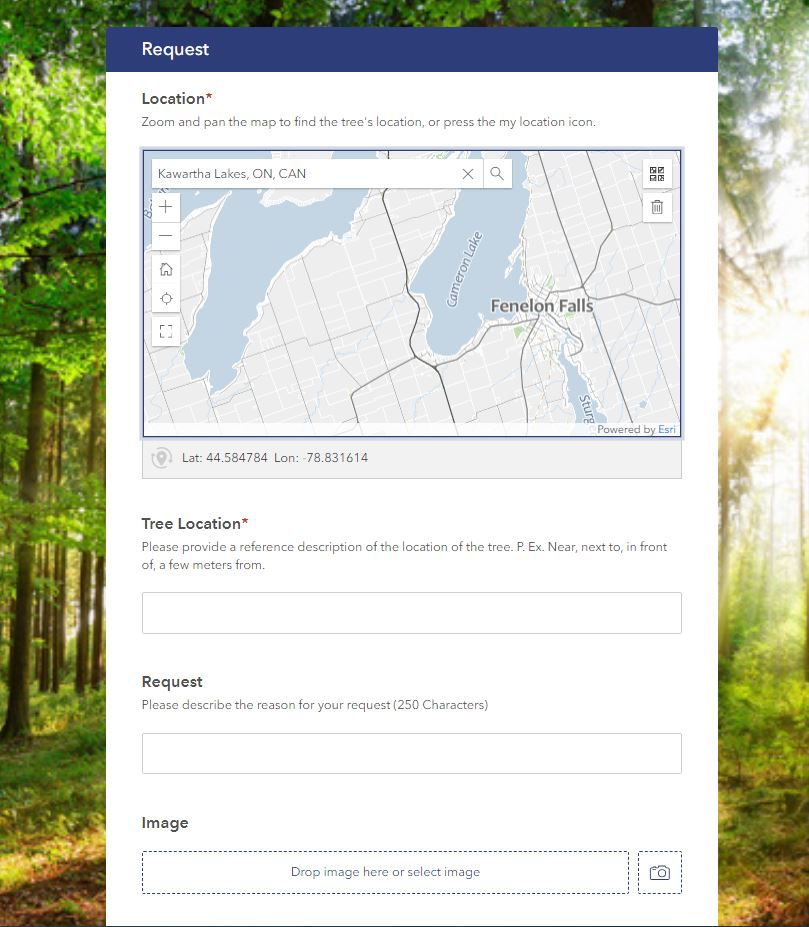

We have created a series of surveys, public, field crew and supervisor validation surveys all in unison to create a request and maintenance workflow.
This begins with a request being received from the public. This creates a data point and basic request information. This request then gets processed by the supervisor and updated onto a field crew map layer showing the tree point indicating there is to be work done to the tree.
From there the field crew/arborists are to look at the tree to determine its conditions and next steps for maintenance. Uniting another survey which finally gets update once more creating a centralized tree inventory with the public requests being processed by supervisor and field crew.
List of deliverables:
- Tree locations
- Database structure
- Layer with remote sensed tree points
- Custom Basemap. (Link here)
- Survey 123 for public requests.(Link here)
- Survey 123 for supervisor validation.(Link here)
- Field Maps for arborist processing
- Dashboard.(Link here)
- Story map. (Link here)
- User manual for client